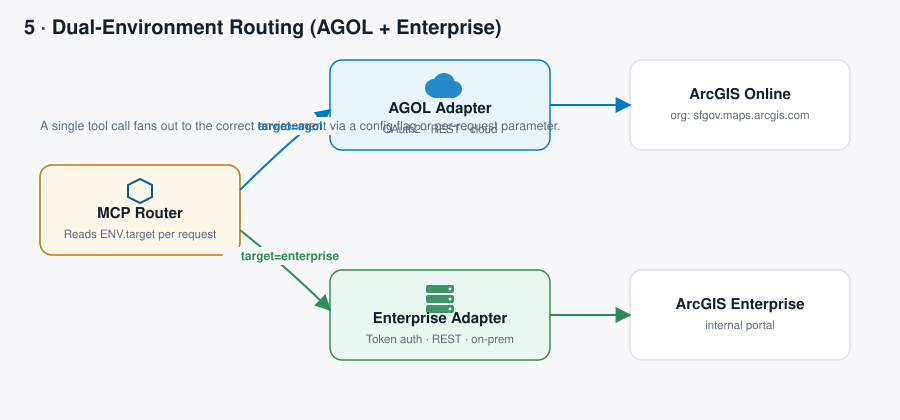

ArcGIS Online vs. ArcGIS Enterprise
A side‑by‑side comparison for teams deciding how the MCP server should route requests between a cloud org and an on‑prem portal.
Routing diagram

Feature comparison
| Aspect | ArcGIS Online | ArcGIS Enterprise |
|---|---|---|
| Hosting | Esri‑managed cloud (SaaS) | Self‑hosted, on‑prem or VPC |
| Auth | OAuth 2.0 (app or user) | generateToken, SAML, PKI, LDAP |
| Network | Public internet, no VPN | Usually requires VPN / private link |
| Base URL pattern | https://www.arcgis.com, https://services.arcgis.com/{orgId} | https://host/portal, https://host/server |
| Token lifetime | Configurable, often longer | Short‑lived by default |
| Best fit | Public data, quick prototyping, org‑hosted layers | Sensitive/internal data, data residency requirements |
Recommendation
Most municipal GIS programs run both — public‑facing hub content in AGOL, and sensitive facility/asset data in Enterprise. The MCP server's dual‑environment router (see diagram above) lets a single Copilot Studio agent query either source transparently, based on which organization owns the requested layer.